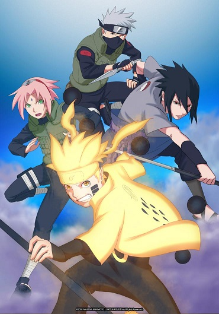
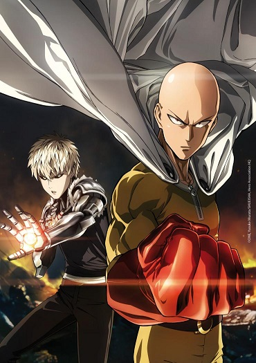
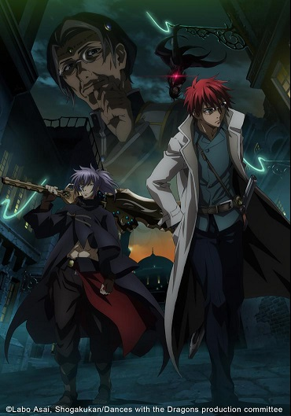
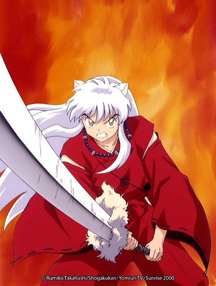
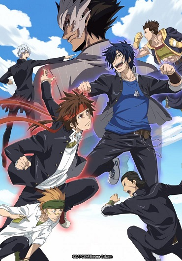

Accueil
Action
Cartoon
Art Martiaux
Film
Categorie : Art Martiaux

Quelques episodes
Episode 450 : DIGNE RIVAL
Episode 477 :NARUTO ET SASUEK
Épisode 494 : NARUTO SE MARIE
Épisode 500 : TOUS NOS VŒUX DE BONHEUR
Quelque images

Quelques episodes
Episode 2 : LE CYBORG SOLITAIRE
Episode 5:LE MAÎTRE ULTIME
Episode 9:LA JUSTICE INFLEXIBLE
Episode 12:LE PLUS PUISSANT DES HÉROS
Quelques images
Suggestion


